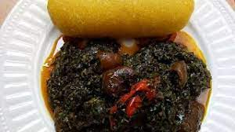
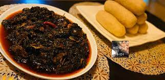
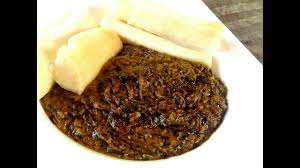
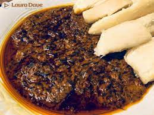
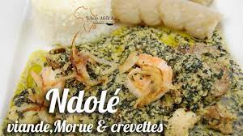

Bonjour. Souhaitez-vous consulter la liste de nos plats ?
ENVIE D'un plat de Eru?
veuillez passer votre commande
:
 
plat camerounais à base de légumes, d'okok et de water leaf originaire
La recette de base contient des écrevisses, du poisson fumé et de la peau de bœuf.
.plat a partir de 1000FCFA
ETAPES DE PREPARATION
Faites cuire votre viande jusqu’à ce qu’elle soit tendre
Emincez vos légumes (l’okok s’achète en général déjà émincés). Précuire l'okok durant 1 heure avec de l’eau et du sel
Rajoutez ensuite le water leaf et mélangez bien
Rajoutez les 200ml d’eau et le cube d’assaisonnement, couvrez et laissez cuire jusqu’à évaporation de l’eau
Lorsque l’eau s’est évaporée, rajoutez l’huile de palme, mélangez, couvrez et laissez à nouveau cuire 10 minutes environ
Servez chaud !
Accompagnez avec du water fufu.
okok camerounais
okoK ingredient et preparation
Bonjour. Souhaitez-vous consulter la liste de nos plats ?
ENVIE D'un plat de Okok?
veuillez passer votre commande
:
 
Okok
Noix de palme,Arachides (tachetés de préférence), Sucre, Sel
plat a partir de 1000FCFA
ETAPES DE PREPARATION du OKOK
Etape 1 : Dans une casserole, faire cuire les noix de palme et l'Okok (emballé dans le plastique).
Etape 2 : Griller très légèrement les arachides et les écraser.
Etape 3 : Après cuisson de vos noix de palme, les piler dans un mortier, ensuite y extraire le jus.
Etape 4 : Mettez votre jus de noix de palme et votre Okok dans votre casserole, laisser les mijoter pendant au moins 30 à 45 minutes.
Etape 5 : Ajoutez ensuite votre arachide préalablement écrasée.
Etape 6 : Laisser cuire ce mélange jusqu'à ce qu’il devienne un mélange pâteux.
Etape 7 : Lorsque les feuilles d'okok vous semblent presque cuits, y ajouter du sel et du sucre selon votre convenance.
Etape 8 : Laissez mijoter encore pendant quelques minutes.
Etape 9 : Votre Okok est prêt.
Ndolè camerounais
Ndolè ingredient et preparation
Bonjour. Souhaitez-vous consulter la liste de nos plats ?
ENVIE D'un plat de Ndolè ?
veuillez passer votre commande
:

Bon Ndolè1
1kg de viande,½ l d’huile, 4 d’oignons, 300g de pâte d’arachide,2kg de feuille de n,
dole150g de crevettes séchées,3 gousses d’ail,piment rouge,cubes Maggi,sel,
plat a partir de 1000FCFA
ETAPES DE PREPARATION DU NDOLE
Mettre l’eau salée à bouillir, découper et laver les feuilles de ndole.
Les mettre dans de l’eau bouillante et les cuire rapidement à découvert pendant 45mn environ avec un morceau de sel gemme.
Rincer et égoutter dans une passoire.
Presser les feuilles pour enlever de l’eau, les mettre sur une assiette formant des boules avec les feuilles.
Dans une casserole, mettez les arachides (crues) avec de l’eau et laissez cuire 5 min environ, après ébullition, retirez-les du feu égouttez-les et écrasez-les avec tous les condiments (oignons, ail, piment tout finement) et mettez la préparation de coté.
Faire chauffer de l’huile et saisir les morceaux de viande avec des oignons finement coupés.
Mélanger pendant quelques minutes et remuer jusqu’à coloration.
Ensuite, ajouter l’ail, le piment, l’oignon, les crevettes écrasées puis la pâte d’arachide. Mouiller de ½ litre d’eau et cuire la viande pendant 1h30mn environ.
Cuire à feux doux pendant 15mn.
Ajouter alors le ndolé délicatement en pluie dans la marmite.
Dès que le ndolé est bien dilué dans la sauce, ajoutez de l’eau.